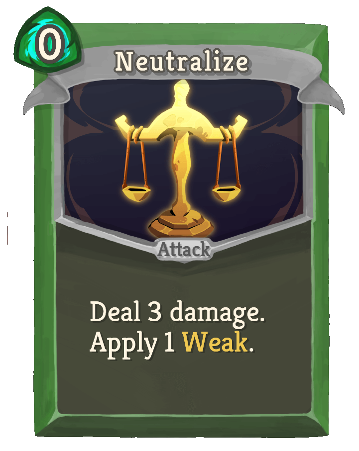
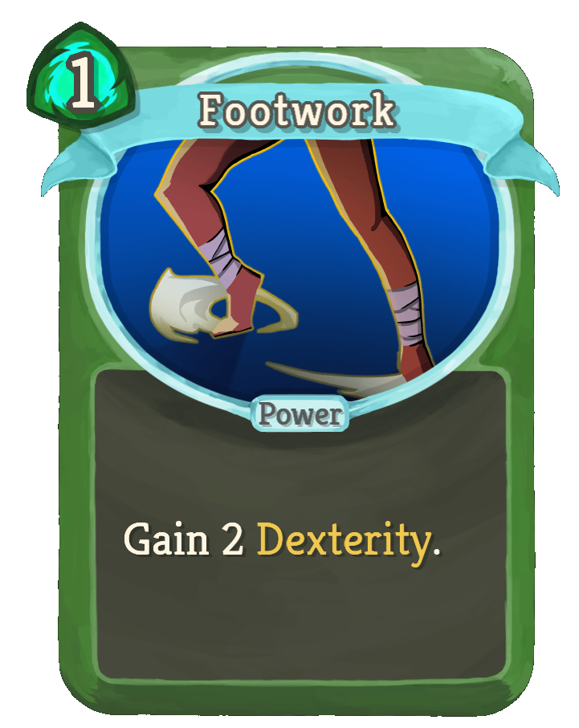
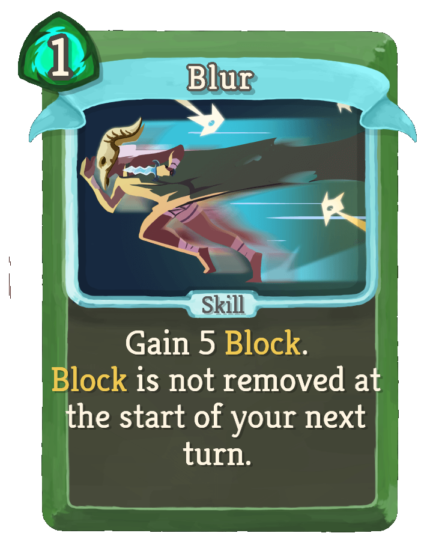
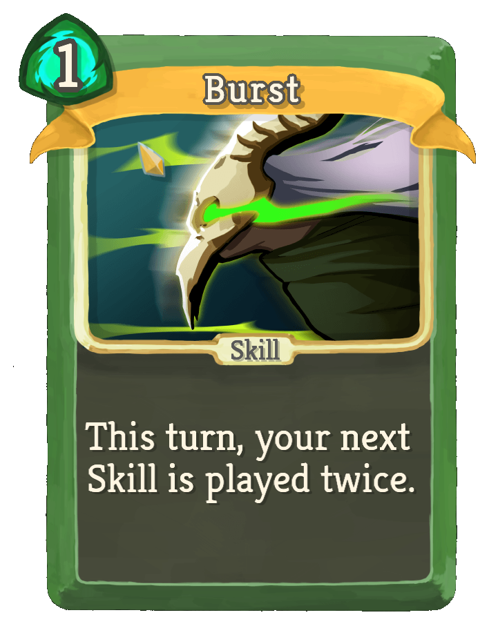
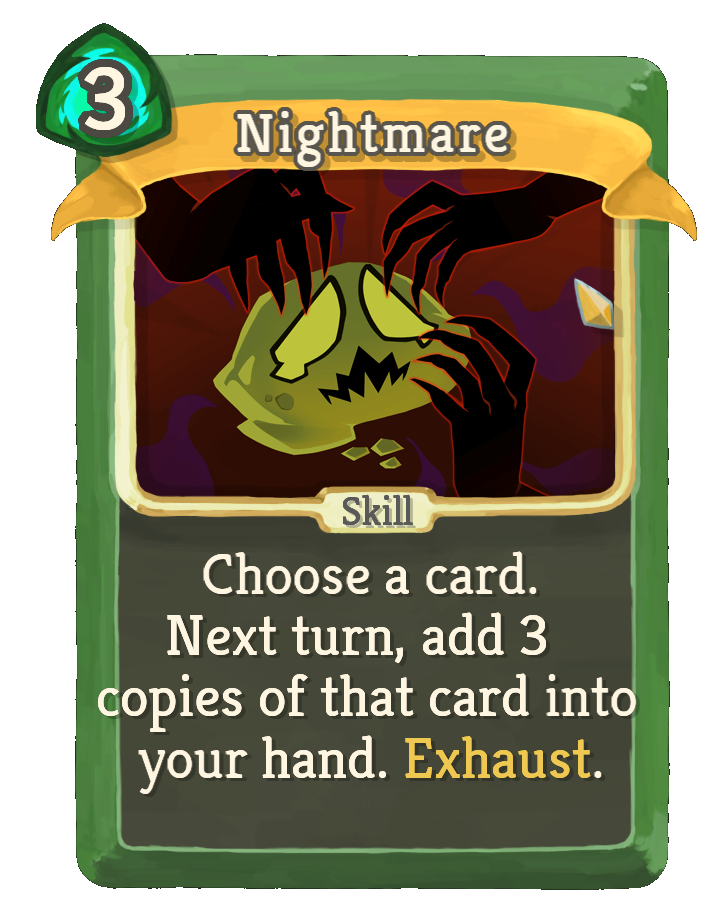

The Silent

Playstyles of the Silent
The Silent plays quite like a rouge. She tosses many shivs, poisons her foes and use's her, weakens them and has fantastic defensive capabilities. Her starting relic, Ring of the Snake, to me isn't that impressive. It lets you draw an addtional 2 cards on turn one. Sadly this can be mimicked by every character if they get the common relic, bag of preperation. However if you can upgrade her relic to the RIng of the Serpent, you gain an additional card draw EVERY turn. Having more options like this is fantastic.
Some of my favourite Ironclad cards
-

Neutralize – Free damage and applies weak. When upgraded it applies two weak. -

Footwork – Boosts dexterity, making all block cards stronger. -

Blur – Lets you keep block between turns, very strong defensively. -

Burst – Doubles your next skill card. This is easy to combo with. -

Nightmare – Can create insane setups by duplicating core cards to your build.